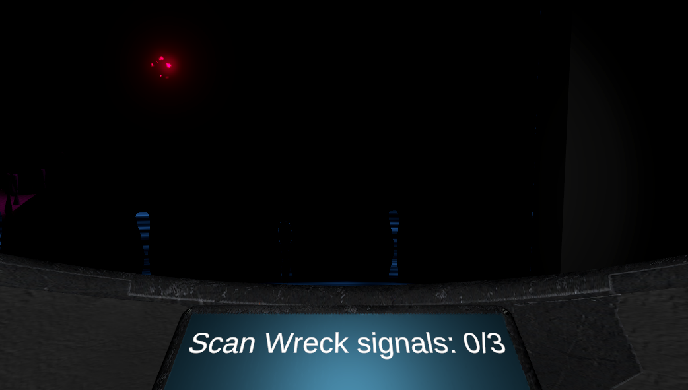
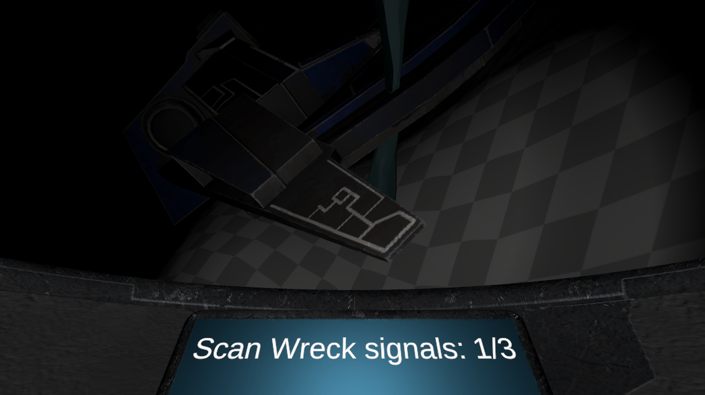
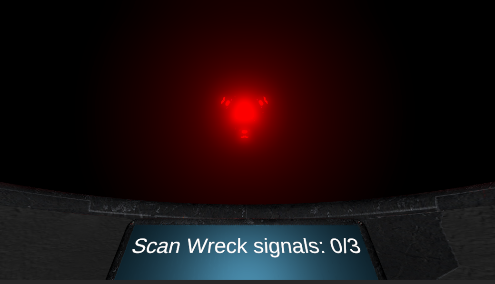

EchoLocation is the most developed prototype in a series of rapid prototypes that I worked on for a course at my study.

The course that Echolocation was made for is about making rapid prototypes to be able to show and test ideas quickly, these prototypes were made in 2 weeks each with a certain theme in mind.
The theme for Echolocation was "blind/low visibility", and the first version of it was purely about navigating through the dark deep sea.
After making the first version I worked on the prototype for 2 more weeks to add the theme "horror" to it as well.
